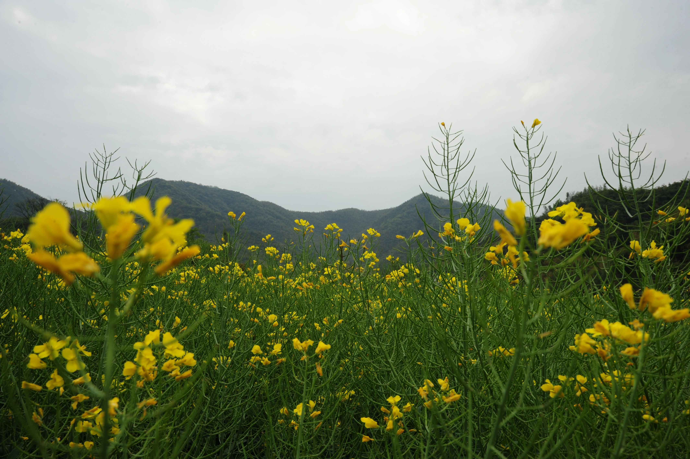

不尽如人意的周四
又到了心情不好写byd日记的时候了，现在是周五，但周四的转专业显然令我一个人在北京茫然，漂泊的人不知该将心安放与何处了
显然转专业的我在十八进二的淘汰赛中应为没有做关于考古的课程学习大概率要被淘汰了
本来觉得日子无论怎样还得过，然而今天在校园开放日各个专业对学生和家长的欢迎我又觉得很伤心了
为什么高考成绩在现在就成为废纸了呢...看着那些天真的孩子们要面对各种各样的神秘的北联大人员就觉得可怜
我觉得我们的社会教育确实出了问题，我想学习我感兴趣的专业，我觉得我也足够优秀，但是没有机会证明自己就是没有，现实就是冷冰冰的对待普通人
是我不够努力吗？想来是努力错地方了，或者还是过于摆烂了，一想到在大学里在意的某些事情到别的地方又变得根本看不上眼就很可笑可悲了
International 你在哪里...希望未来的所有人能处在一个美好的世界里。年复一年，明年再战...真的能成功吗...我破碎的梦....
还是早点把北京联合大学生存手册写出来吧，也快高考了....
于2025/5/17晨（伤心的澳洲白茶）
有一说一，令人困惑的是昨天我的转专业申请被通过了，反而让我揣揣不安了起来，感觉这专业又不适合我了。实话实说，本来都打算在旅院再呆上一年了
不过好点来说不用考虑团宣竞选副部和班长接下来的事情了，算是体验了一下吧...总之接下来的日子是要努力学习和面对各种全新的挑战了，环境也不一样了
只能说是好运来吧，接下来的日子就加油吧！
于2025/5/24中午